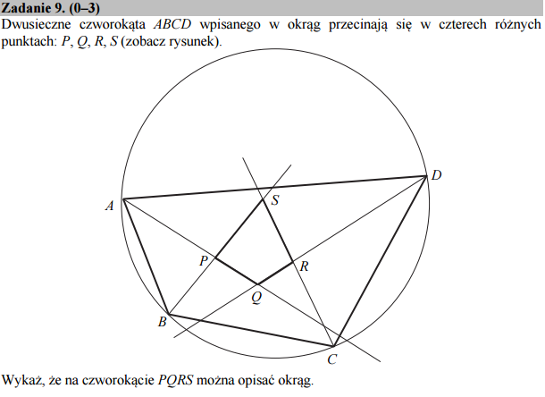

Solve and substitute¶
Zadanie to nie jest trudne, ale występuje wiele zmiennych i łatwo o pomyłkę. Dlatego warto zastosować system algebry komputerowej do „czarnej roboty” i zająć się jedynie wypisaniem formuł. Pozostawiamy czytelnikowy odnalezienie w poniższym kodzie twierdzeń o sumie kątów w trójkącie i czworoboku.
solution_dict=True
Zostosowanie parametru solution_dict=True w funkcji
solve pozwala na otrzymanie rozwiązania w postaci
Pythonowego słownika. Taka postać jest bardziej uniwersalna do
dalszych przekształceń.